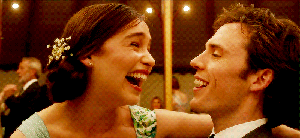

Livro: Como Eu Era Antes de Voce

Louisa após perder seu emprego, começa a trabalhar como cuidadora de um tetraplégico que parece não gostar muito de sua presença. Depois de um tempo juntos, eles passam a se entender melhor e conquistam uma certa afinidade. A convivência entre os dois traz mudanças significativas para ambos, porém Louisa descobre um plano que Will vem mantendo em segredo e fará de tudo para impedi-lo.
Louisa é uma jovem de vinte e seis anos que ainda mora com os pais. A família passa por dificuldades financeiras e ela ajuda em casa. Louisa é muito esperta no entanto não tem ambições, não sabe o que fazer no futuro, então fica absolutamente perdida quando precisa procurar emprego.
Através de uma agência ela consegue uma entrevista para ser cuidadora de um tetraplégico. Vai a entrevista sem muita confiança, afinal, não tem experiência na área. A senhora, Camilla Traynor, mãe de Will, enxerga nela a pessoa perfeita para o que estava procurando. Não queria outra profissional robotizada, que tratasse de seu filho como "só mais um trabalho", ela queria justamente alguém como Louisa, uma pessoa espirituosa e que passasse confiança.
Will Traynor sofreu um acidente de moto que o deixou tetraplégico e lhe tirou as esperanças de continuar vivendo. Antes do acidente curtia a vida mas depois do ocorrido se vê sem ânimo para mais nada. Sua rotina é exaustiva e dolorosa, Will não aguenta mais tanto sofrimento e só quer que tudo acabe.
Quando sua mãe contratou Louisa ela omitiu um fato importante, o principal motivo de tê-la escolhida para ficar com Will. Com algum tempo de trabalho, Louisa ouve uma conversa e finalmente compreende o motivo de ter sido contratada. Se sente enganada. Além disso, não consegue entender como a mãe de Will concordou com o pedido que ele lhe fez.
Will quer cometer um suicídio assistido e quando Louisa fica sabendo disso tenta fazê-lo mudar de ideia sem deixar que ele perceba que ela sabe de seu plano. É uma corrida contra o tempo, ela tem poucos meses para mostrar a Will que mesmo sendo difícil, vale a pena lutar pela vida.